Week no. 9
Mechanical Design :
-
design a machine (mechanism+automation), including the end effector;
-
build the passive parts and operate it manually;
-
document the group project and your individual contribution.
Group Assignment
Our Fab Lab has many contributions in our community especially with schools. So we decided,
for this assignment to do a "Fab Kit - Marble machine", so we are developing a modular a portable
marble machine for the kids.We decided the parts that each one of us would like to do and what fablab machines
would be used for thar personal purpose. Each one of us had to build one modular part that could fit
anywhere in the marble board and it should be compatible to fit with any other parts created by us.
Toni: design and build the modular board.
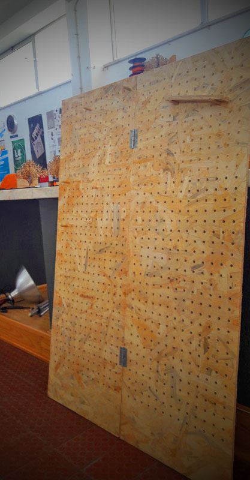
João: design a marble caroussel (lasercutter).
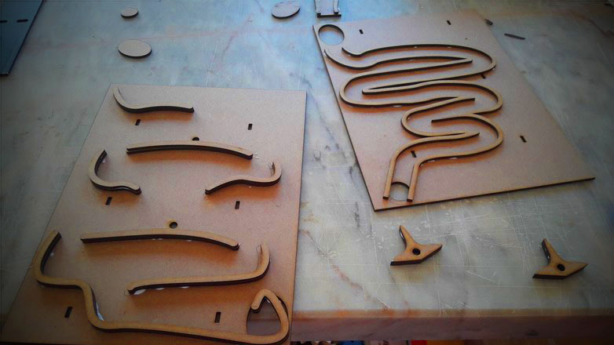
Nuno: design and build the marble lift structure.
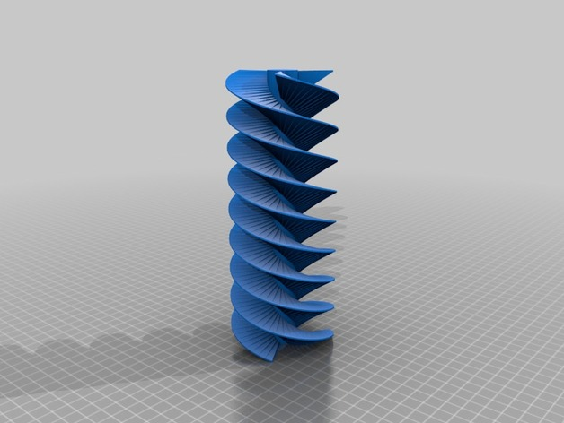
Me: design and build marble circuit joints (3d printer)
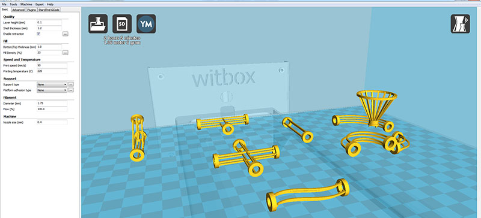
My individual contribution.
I started by drawing some circuit joints for the 3d printer
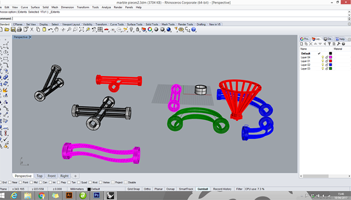
and i printed some of them:
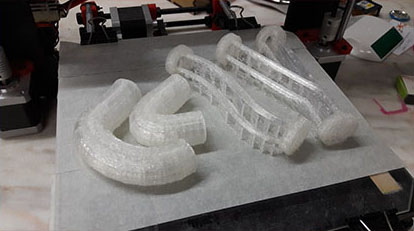
but then i started to think how can i automate this pieces?
And decided that i hould like to have a part that could do something with the marble movement.
So i started drawing a piece for the begining and the end of the circuit, and i will fit in this piece
a LED and a Light Sensor.
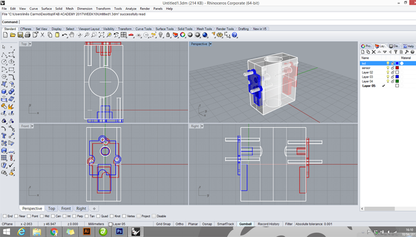 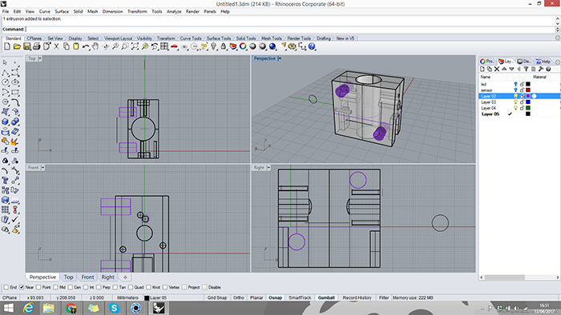
and then a start printing:
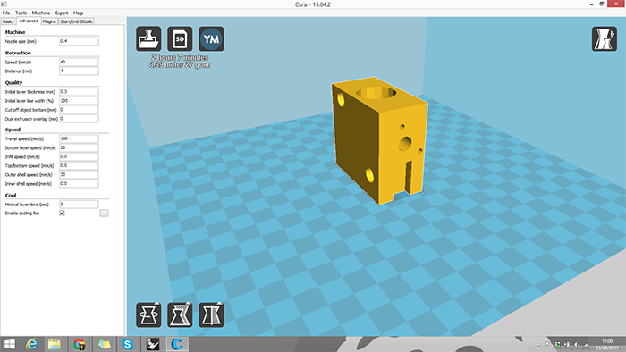
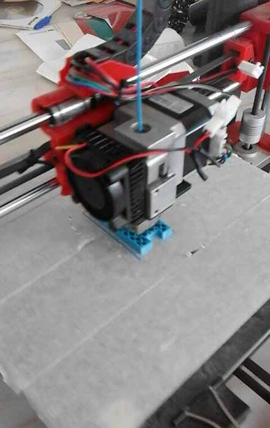 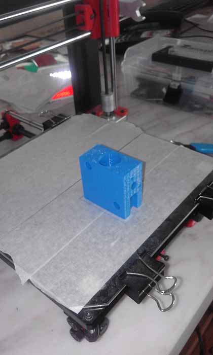
Testing
Now I'm testig if de LED and the sensor really fit im my piece and
the wood pins to stick the modules to the marble board.
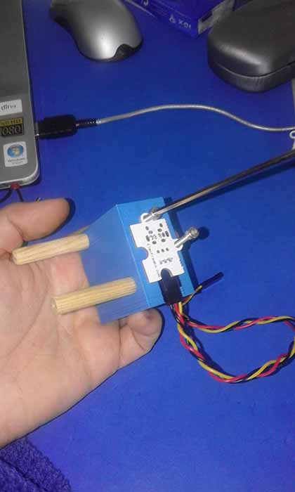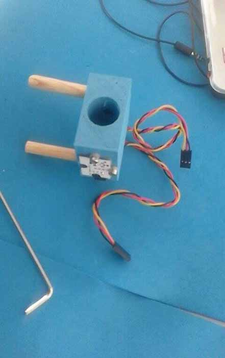
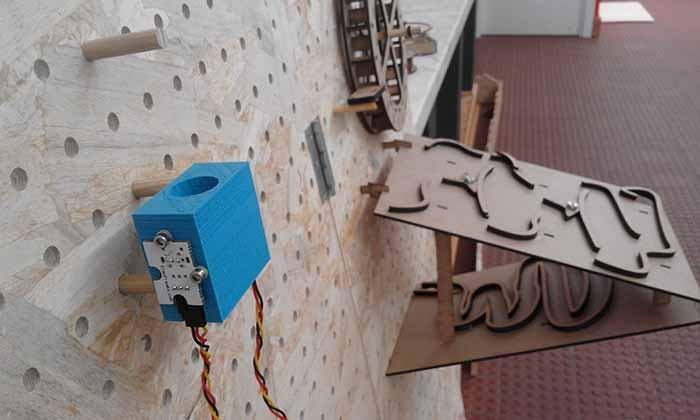